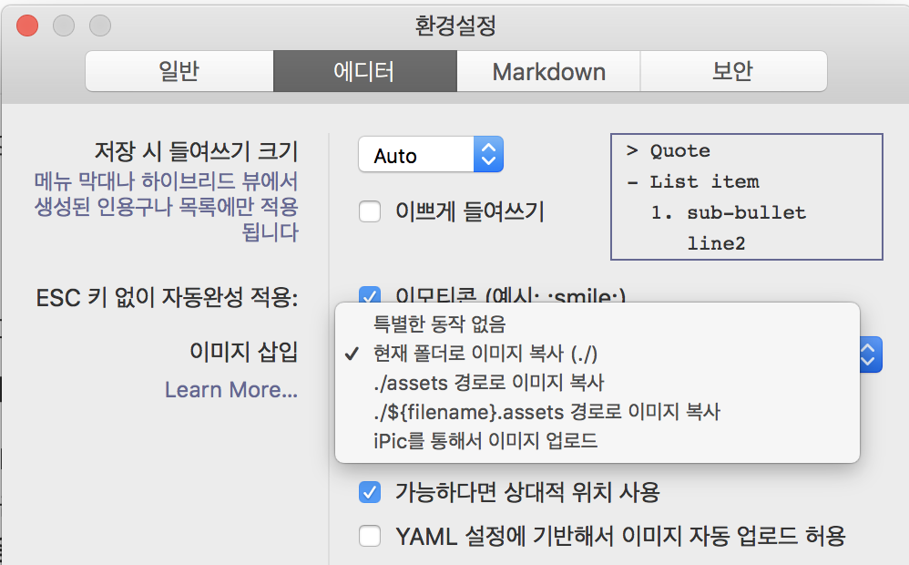

Typora, Hexo 이미지 설정
⚠️ Typora와 Hexo의 소개는 이 글의 주제가 아니다. Typora 에 대한 소개는 이전 글 을 참조한다.
마크다운 글 작성, 블로그 포스트, Typora 하나로 끝을 내자.
서문
생산성 때문에 미디움 으로 옮겨서 글을 작성한 것이었는데, 미디움의 웹 에디터가 그 다지 성능이 좋지가 않아서 다시 고민중이다.
대표적인 문제는 두가지다.
- 글 작성중 저장이 꼬였다고 리로드하라고 한다.
- 코드 하이라이팅이 매우 취약하다.
반면 여기서 쓰고 있는 Hexo는 지킬과 달리 쓸만한 테마가 그리 많지 않았다. 그렇다고 만들자니… “내가 그런 것 까지?” 하는 생각이 들고, 그나마 마음에 드는 테마를 골라도 시간이 지나면 질리기 마련이니, 여기서 또 시간이 소모된다. 글 생산에 집중하고자 했고 그래서 미디움 으로 옮기게 되었다.
그런데 여기서 가볍게 글을 쓰고자 하는 나의 마음과는 달리 팔로우 라는 시스템이 붙어 버리니 조금 부담스럽게 된 것도 사실이다. 많은 사람이 글을 읽으면 더 좋으니까 라는 마음도 있었지만,
그래서 좀 더 정리 안되면서도 개인적인 쏟아낼 공간이 필요해서 다시 이 곳을 활용하기로 했다.
Typora 🤝 Hexo
Typora 라는 내가 써본 마크다운 에디터중 가장 강력하며 안정화되어 있다. Hexo 는 작성된 마크다운을 가지고 포스팅을 만들어준다.
그럼 여기서 소개하고자 하는, 해결하고자 하는 문제는 무엇인가?
이미지 첨부
이미지 첨부를 하게 되면 Typora 라는 친절하게도 몇가지 옵션을 제시한다. Hexo는 포스팅의 파일 명을 기반으로 동일 명의 디렉토리를 참조하여 이미지를 업로드하고 이를 참조한다.
1 | . |
이런 형태다. 즉, cognito.md 는 cognito 의 참조를 통해야 디플로이시에 문제가 발생하지 않는다.
문제는 이 설정이 Hexo 의 설정과 맞지 않는다는데 있다.

현재 폴더로 복사와 몇가지 프리셋이 준비되어 있는데 동일 폴더명을 선택할 수 없다. 그래서 플러그인을 작성하려다가 잠시 멈추고 몇 가지 문서를 검색해서 참조하니 간단한 해결책이 있었다.
typora-copy-images-to:
포스팅 글에는 마크다운 문서 상단부에 YAML 포맷으로 메타 정보를 기입할 수 있는데 이 메타 정보는 HTML 을 생성하는데 관여하고 글 자체에 영향을 주지는 않는다.
이런 방식이 블로그 포스팅에 관련해서는 일반적이기 때문인지 이를 활용해서 Typora 에 설정을 주입할 수 있다. 플러그인도 아니고 기존 환경을 이용하는, 이건 뭐 매우 신박한 방식이다.
결론적으로는 typeora-copy-images-to 속성을 주입놓으면 Typora 강 이를 읽고 설정보다 우선시하여 적용한다. 확인은 드래고 이미지를 넣게 되면 typora-copy-images-to 에 의해 설정된 디렉토리를 읽어 자동으로 복사가 이루어지고 그에 따른 경로도 수정되어진다. :+1:
scaffolds
Hexo 의 디렉토리 구조에 scaffolds 라는 디렉토리가 존재한다. 이 곳을 열어보면 일반적으로 draft.md, page.md, post.md 가 들어있다. 이를 레이아웃이라고 하는데 cli 를 통해 포스트(파일)를 기본 구조와 함께 생성할 수 있다.
문서를 참조하면 기본 레이아웃은 post 다. 즉 hexo new <filename> 은 post, post.md 파일을 참조해서 생성된다.
post.md
1 | $ cat scaffolds/post.md |
파일을 열어 보면 위와 같이 되어 있다. typora-copy-images-to 속성을 눈 여겨 보자. 그럼 아까 포스트를 생성하고자 했던 명령어에 실질적으로 파일 이름을 부여해보자. 파일 이름은 타이틀도 함께 매칭된다.
1 | hexo new typora-hexo |
파일이 생성되었다.
1 | --- |
파일을 열어보면 위와 같다. 우리가 주목해야할 것은 typora-copy-images-to 속성이다. 뒤에는 을 매칭해 뒀기 때문에 값은 파일명과 같이 typora-hexo 다.
때문에 이제 그냥 글을 작성하면서 이미지를 드래그해서 넣으면 알아서 typora-hexo/<image-file> 형식으로 삽입되게 되며 복사 또한 자동으로 이루어져 이미지에 대한 고민에서 해방된다.
Generate 후 HTML에서 이미지가 깨지는 문제
Hexo 의 설정 파일인 _config.yml 에서 post_asset_folder: true 를 설정하게 되면 `hexo new
우리는 위에서 typora-copy-images-to: 메타 속성의 주입을 통해 이미지 드래그시 파일명과 동일한 디렉토리에 이미지를 복사하게 설정을 해둬서 글을 작성할 때는 이미지 잘 보인다. 문제는 Hexo 가 hexo generate 를 할 때는 이미지를 알아서 어셋 디렉토리를 참조하게 되어어서 발생하는데 이 때문에 생성된 HTML 에서는 이미지가 깨지게 된다.
hexo generate 시 경로를 중복 참조하지 않도록 플러그인을 작성했으니 동일한 이슈로 고통받는 이가 있으면 플러그인을 사용하자.
https://github.com/deptno/hexo-typora-plugins/tree/master/packages/hexo-typora-image
hexo generate 전에 플러그인을 인스톨하면 자동으로 적용된다.
터미널에서 Typora 를 통해 markdown 열기
Hexo 에서 템플릿(scffold)을 통해 파일을 생성하기 위해서는 terminal 을 이용해야하므로 Typora 또한 터미널에서 열 수 있어야 작은 스트레스를 면할 수 있다.
alias
Typora 의 공식 문서에 칠절하게 나와있어서 한줄 복사해서 사용하는 쉘의 설정파일에 추가하면된다.
1 | alias typora="open -a typora" |
난는 개인적으로 zsh 을 이용하고 있으므로 ~/.zshrc 파일이다. 이렇게 하면 쉘에서 파일을 생성한후 타이포라를 통해 바로 열 수 있다. typora typora-hexo.md 🐏